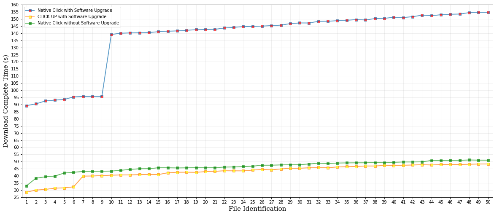

In order to further demonstrate the effectiveness and convenience of CLICK-UP, we offer a software upgrade walkthrough on a firewall network element. We hope to demonstrate the agility of module integration by upgrading a certain number of new modules during this demo, and checking its downtime compared to the native manners. We also plan to demonstrate the state persistency by implementing tcp session states in the demo, and observing the negative influence on state loss compared to our state reconstruction case.
During demonstration, we are going to demonstrate more details as described above by using a laptop (with dashboard and http benchmark on it) and a raspberry pi (with whitelist firewall and CLICK-UP server on it).
Hardware Environment :
-
(1) A laptop connected with a wireless router (LapHost: wlan0 -- LAN).
-
(2) A raspberry pi 3B connected with a wireless router (Raspi: wlan0 -- LAN).
-
(3) A wireless router connecting the laptop and the raspberry pi in the LAN mode (Raspi: wlan0 -- LAN -- LapHost: wlan0).
Software Environment :
-
(1) Two virtual machines are powered on the laptop with the bridge network mode (LapVM1: eth0 -- LAN -- LapVM2: eth0).
-
(2) On one vm, wgetTest.py can be executed to perform the role of a http client. The script defines a job that download 50 files from a http server in parallel. Each download stream is based on a stateful TCP session.
-
(3) On another vm, The below commond can be executed to perform the role of a http server.
# Any other version's JDK that supports Apache Tomcat
[root@vm1-localhost2]# sudo apt-get install openjdk-7-jre-headless
# Enter the directory of tomcat binary
[root@vm1-localhost2]# sudo cd CLICK-UP_test/server/apache-tomcat-9.0.8/bin
# Start the http server
[root@vm1-localhost2]# sudo sh startup.sh
-
(4) Besides, the script gre.sh should be respectively executed on vm1 (http client) and vm2 (http server), so as to implement the overlay transit path. It will configure the GRE tunnel as well OpenVSwitch.
-
(5) The CLICK-UP's binary image should be programmed into the raspberry pi in advance. httpserver can be started on the platform to perform the role of CLICK-UP server.
-
(6) Similarly, the script gre.sh should be executed on raspi (CLICK-UP server). The complete overlay transit path can be represented as following:
LapVM1: p0(FileClient) -- LapVM1: OVS -- LapVM1: eth0(GRE) -- LAN -- RasPi: wlan0(GRE) -- RasPi: OVS -- ClickUp-NS: p1 -- CLICK-UP -- ClickUp-NS: p2 -- RasPi: OVS -- RasPi: wlan0(GRE) -- LAN -- LapVM2: eth0(GRE) -- LapVM2: p0(Fileserver).
-
(7) Finally, the dashboard of CLICK-UP is deployed on the laptop host and is connected with the CLICK-UP server (LapHost: wlan0(dashboard) -- RasPi: wlan0(CLICK-UP server)).
Walkthrough :
-
(1) Open the browser and visit the page http://localhost:3000, the current atom DAG can be found if there are processing functionalities running on the CLICK-UP (or, it will be empty if there are not).
-
(2) Assume there are not any functionalities running on the CLICK-UP by now. Design a atom DAG with the orchestration as illustrated in type_create.txt. Fill the text and refresh, the corresponding atom DAG will be shown in a graphic manner. Then, submit it to CLICK-UP server, the corresponding functionalities will be boot to provide with dedicated service after creating completion.
-
(3) The service context determined by this orchestration can be represented as following:
fromdevice -> classifier(IP) -> strip(MAC) -> checkheader(IP) -> classifier(TCP) -> readwhitelist(State) -> sessioncheck(Firewall) -> writewhitelist(State) -> encap(0x0800, fa:fe:ca:5d:97:6c, ee:43:35:3d:55:7c) -> todevice
-
(4) When one frame goes through the network element, it is first checked the ether type. Unless IP packet, other type's MAC frame is passed. If is IP packet, the packet will be put off the MAC layer encapsulation and validated the IP header. Unless TCP flow, other type's IP packet is passed. If is TCP flow, check whether the TCP flow is on the white list. If on it, passed. Otherwise, check whether the TCP flow is within a legal session. If illegal, discard the flow. Otherwise, wirite into the white list. Finally, all passed ones are re-encapsulated with MAC layer header and sent out of the device.
-
(5) After the functionalies are online, execute the file client on vm1 and the file server on vm2. During the file transfer, try to upgrade current functionalities with a bran new orchestration. Similarly, design again a atom DAG in dashboard, refresh, submit.
-
(6) The detailed download completion time is shown in the following figure:
